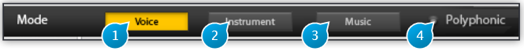

2 Mode

The Mode selection buttons puts the plug-in into the one of three modes, each best suited for one of three different types of audio material: Voice, Instrument and Music, which are explained in detailed below.
Mode serves as a starting point upon which to base more precise tweaking to achieve the desired result. It selects the type of algorithm used internally by the plug-in, initializes source settings with all-round usage values, amongst other things.
Selecting the right mode for your material should be the first step you perform before doing any further editing.
Please note that the algorithms used to process the signal are very different for the three modes, so setting the right mode here is crucial to proper operation, and failing to so would heavily compromise the quality and accuracy of the audible result.
In some cases however, for example if you’re crafting special effects for sound design, are interested in deliberately emphasizing artifacts or maybe creating distorted robotic voices, well of course, nothing should stop you from trying even the most weird and technically absurd combinations, your imagination and taste is the limit!
2.1 (1) Voice
Voice Mode is specifically targeted at voice processing, be it spoken word or sung material. By default, the Polyphonic option is disabled in this mode, as a monophonic voice (one speaker or singer) is the most common case. If you’re dealing with a choir or harmonized voice, you should enable the polyphonic setting - but not when processing double-tracked vocals.
2.2 (2) Instrument
Instrument Mode should be used when dealing with any kind of material other than vocals, whether this originates from an acoustic, analog or digital source recording, as long as it originates from an instrument that is playing individual pitched notes. Polyphonic is disabled by default in this mode, and should only be enabled with a true polyphonic recording, such as a guitar or piano playing chords or a melody accompanied by a bass line. A mix of two different instruments, each playing an independent monophonic line, does not fall into this case, as it involves two different timbres, and the Music mode should therefore be used instead.
2.3 (3) Music
Music Mode should only be used for treating a full mix, that is material consisting of several instruments playing. In this mode, the Polyphonic option is enabled and locked, and processing is restricted to a global transposition, so the plug-in operates as a high-quality pitch-shift unit.
2.4 (4) Polyphonic
When enabled, the Polyphonic option disables some functions such as the pitch-tracking module. Pitch-tracking and extraction of overlapping notes in a reliable and artifact-free manner is currently extremely difficult to achieve and generally requires advanced user interaction.
Here monophonic means one-note at a time, and not monaural (single channel). The plug-in itself can naturally process any channel configuration, be it mono, stereo, as well as surround recordings. The mono sum of all input channels is used for the detection.
Sometimes it is not so straightforward to decide wether the source is monophonic or not, as in the case of a complex electronic sound texture, or if a monophonic part is drenched in echo and reverberation, leading to notes that overlap in time a lot. In this case you should also try the Music setting and let your ears decide which is best.